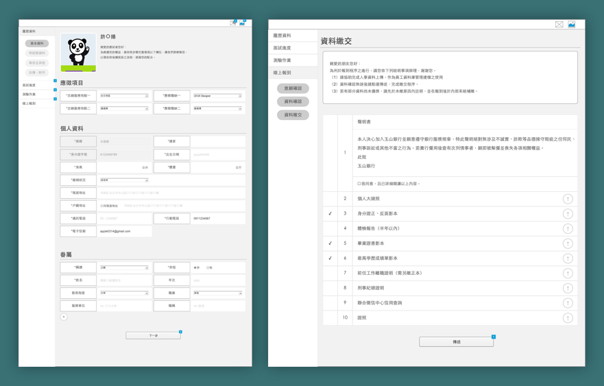
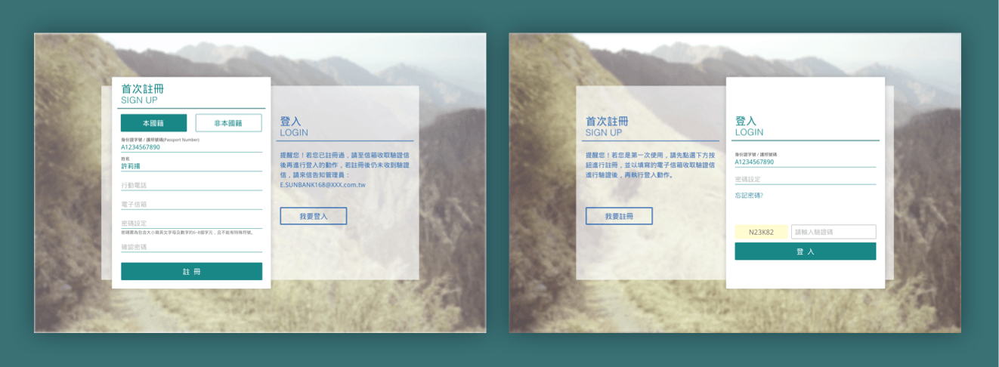

Owner：E.SUN Commercial Bank Co., Ltd
Category：RWD Web
Goal：Improve UX and UI, conform to modern web trends, and show the company's determination to keep pace with the times
Ability：Axure RP, Sketch, HTML5, CSS3, Jquery & Validate, RWD
Requirement analysis & Process planning

Design

Build website